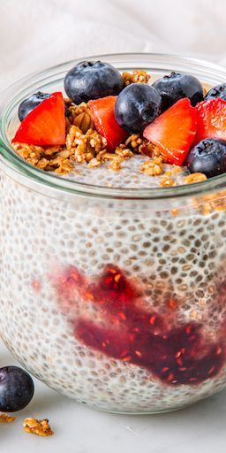

Chia Seed Pudding
Chia Seed Pudding
Ingredients
- 1/4 c. chia seeds
- 1 c. almond milk (or milk of your choice)
- 2 tsp. maple syrup, honey, or agave nectar
- 1 tsp. pure vanilla extract (optional)
- Pinch kosher salt
- Sliced fruit, granola, jam, or nuts for serving
Steps
-
In a medium bowl, whisk to combine chia seeds, milk, sweetener of your
choice, vanilla if using, and salt.
- Cover and refrigerate until thick, 2 hours up to overnight.
- Serve with mix-ins and toppings of your choice.